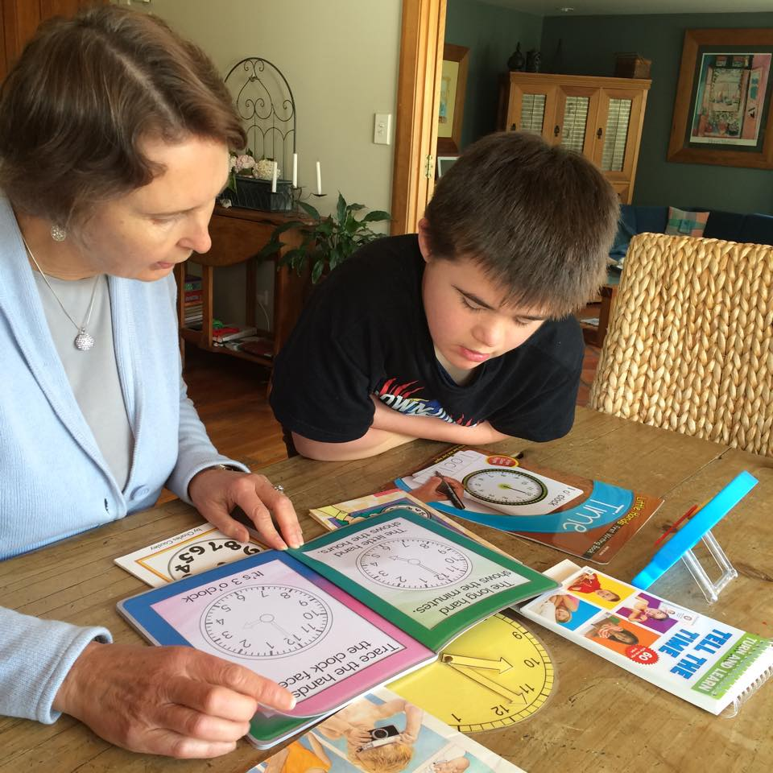
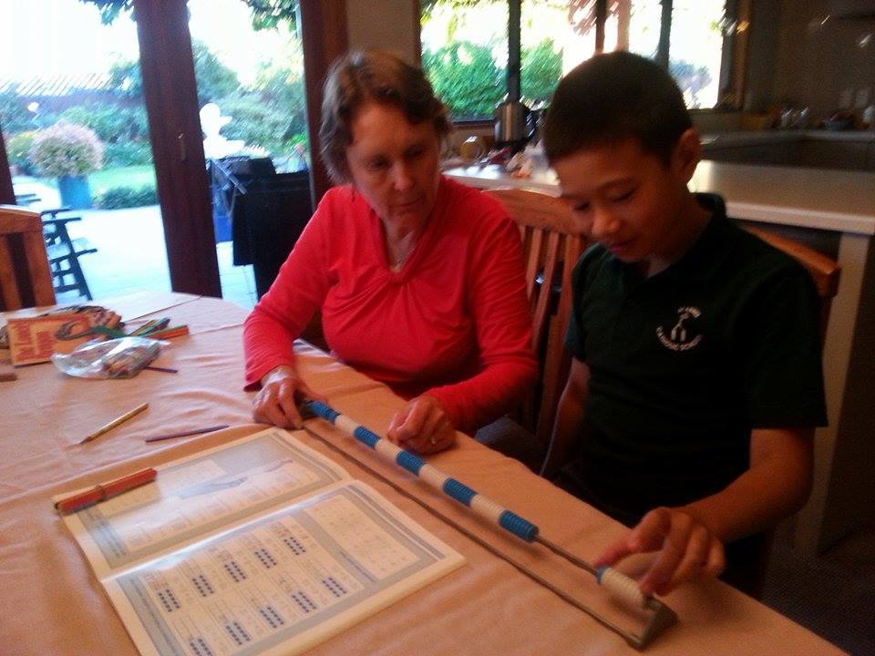
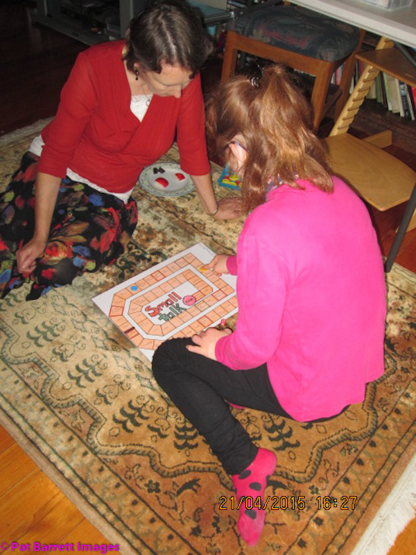

Jennifer
My child, Gabriel, who has Down's Syndrome, has been able to benefit from Helen's expertise and wealth of resources for many years now.

Gabriel is working on a 'time' unit to understand analogue and digital time as part of a 'life skills' programme.
Helen is always careful to match her resources to Gabriel's particular learning need at any given time and has created many excellent tools to help him understand various concepts such as time, number, phonics and sequencing. I have witnessed Gabriel on many occasions gaining a greater understanding of a topic due to her efforts. I would highly recommend both Helen and her library of resources to any parent wishing to see their child's learning progress.
Rita
Helen has worked miracles with our son where the Min of Ed couldn't. Our son and Helen met when he had already been at school, unable to talk, read or write.

Shiloh is using a 100 abacus to develop better understanding of 'teen' numbers and how they are formed.
They clicked and work well together. When Helen's funding from the Min of Ed, finished, as we could see progress, we approached Helen about after school help which has been a huge help in assisting our son, who can now read, talk, write and spell and maths. Helen had a way of getting inside his head and found the switch that got him motivated and moving forwards. Helen has a lot of resources that not only includes various levels of reading but has access to other material to suit to give the best help possible to not only our son but other children with learning disabilities. Now, that Helen has unleashed the power of speech and reading in our son, we cannot get him to be quiet. Would happily recommend Helen to anyone.
Christine
Our 15 year old daughter Dominique has Down's Syndrome. She has been a student with the Special Needs Section of Correspondence School. Helen is working with Dominique 2.5 hours each week and has done this for the last 9 years. The expertise, committment and gentle determination that is Helen’s trade mark is tempered by great warmth, humour and integrity with a capital "I".

Dominique is playing a 'small talk' language game to assist in thinking skills, formulating ideas about a topic and speaking in full sentences.
Helen's support has always extended to providing a vast array of resources, some of which she has devised herself and others modified to suit the specific needs Dominique may have in an area of the curriculum. Helen's flexibility to adapt to our child's sometimes challenging lack of motivation, is met with a constant goal to modify the approach so that the learning can still take place.